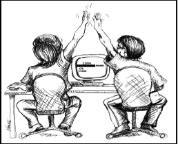

If you haven’t had the opportunity to pair much in your day job, it may seem a little unfair to be tested on the subject. More and more, people are trying to recreate working environments in order to assess candidates and that means pairing. The trouble is, pair tests are often not an accurate recreation and it takes some skill from both candidate and interviewer to get through a pair test smoothly.
This post talks a little about what to expect from a pair test and offers a few tips to surviving the process.
What To Expect
Typically, you’ll sit down with one or two developers, be introduced to a basic problem and asked to solve it. If it’s a good sample problem, you can expect to be asked to implement or fix small, incremental pieces of functionality. It’s unfortunate that we use the term “pair test”. I don’t see it as a “test” but as an exercise or discussion. There shouldn’t be a single right or wrong answer. The prospective employer should really be looking at how you work rather than did she solve the problem? A good coding exercise is simple and open ended.
Expect to be put at ease. The interviewer should make every effort to relax you and communicate their expectations. If you find that your dropped in the deep end and bombarded with all kinds of devious scenarios, you have to question the organisation’s values.
Expect a choice of IDE. If you’re not given a choice, don’t expect to be judged on your knowledge of the IDE.
Expect to be coding for an hour to two. They inevitably take a while and it’s unrealistic to expect a productive pairing session in just thirty minutes.
After the exercise, you may be asked “how did you find that?”. If not, I like to ask the interviewer “how was that? Was it the kind of thing you were looking for?”. It may lead to further conversations that give you the chance to talk about things in more depth, discuss alternatives and generally impress.
Be Yourself
There’s often an unspoken expectation that you’ll be demonstrating your mad TDD skills. I think deep down though, people are interested in seeing how you work, not necessarily that you work in a test driven way. I think its fair to say people do expect to see some tests, so make sure write some. My point is that you shouldn’t be penalised if you right them retrospectively rather than first. If you’re not comfortable doing TDD in your day job, don’t suddenly make out it’s your bread and butter. Try and work how you would on your own. Don’t fake it.
Another motivation for the pairing exercise is to see if, as a prospective pair, you can get on. If you relax and let your personality come through, you’ll both have a better idea what it would be like pairing day in, day out.
Hang ups
Don’t get hung up on the IDE, the API or even the problem. The interviewer shouldn’t be judging you based on what shortcuts your know or what API you know off by heart. If they do, then you should question what’s important to them; an adaptive, bright, enthusiastic developer or a robot that knows emacs keyboard bindings?
With regards to the problem; if its not obvious, ask. A well set pairing exercise should be simple enough to quickly understand what’s required and get you coding. Bogging you down with the complexities of the problem doesn’t help anyone. Really. Don’t be afraid to ask, it’s what we do in our day jobs right?
Nerves
The thing that always gets me is nerves. I put way too much pressure on myself with an involuntary, internal commentary saying “am I doing enough? is that what they want to see? do they want to see this fancy thing? or that fancy thing?”. Don’t be like me, give yourself a break. You’re a professional and good at what you do, you don’t need to show off.
I guess this all leads to my final point…
Summary
Discuss the problem. Discuss what you’re thinking. Discuss what you plan to do. Discuss. Discuss. Discuss.
If you get the chance, even mention some of the awesome things you’ve done. It’s a great opportunity to talk to the devs you could actually be working with. So ask them about the project, about what floats their boat. Remember that you’re interviewing them as much as the other way round.
Communication is key in what we do and it’s key in any pairing exercises. If you’re open, honest and communicative, you won’t go far wrong in a well conducted pairing exercise. Don’t forget too that conducting a pairing exercise is difficult and takes practice. So don’t be too disheartened if it doesn’t go well, but reflect and learn from it.
Good luck!